연세대와 고려대 제시문 면접 스튜디오
기출 제시문 150세트,
실전 규격 촬영 응시
연세대는 준비 8분과 답변 5분, 고려대는 준비 21분과 발화 7분. 그 시간을 그대로 재현해 촬영 응시합니다. 회차마다 전사와 진단과 구술체 재구성 세 단이 돌아옵니다.
제시문 면접 스튜디오는 연세대, 고려대 기출 규격 150세트를 촬영 응시하고 세 단 첨삭을 받는 다섯 단계 과정입니다. 단위 전권 495,000원 인강 포함, 지문 1편 33,000원.
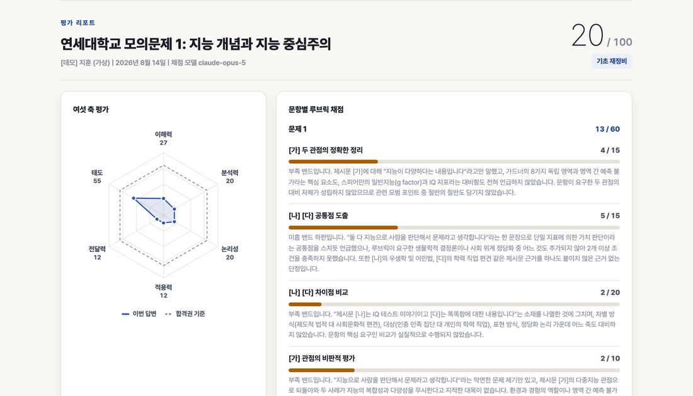
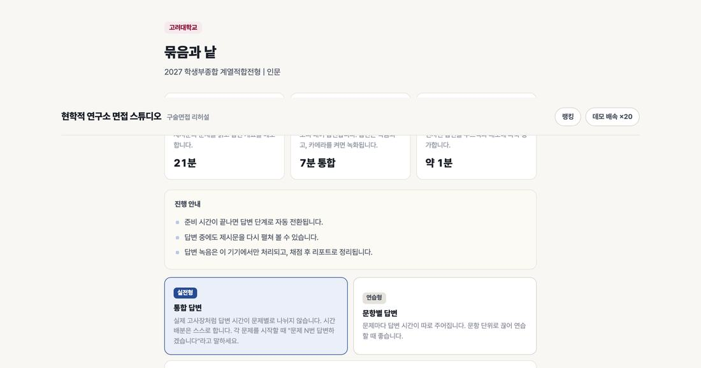
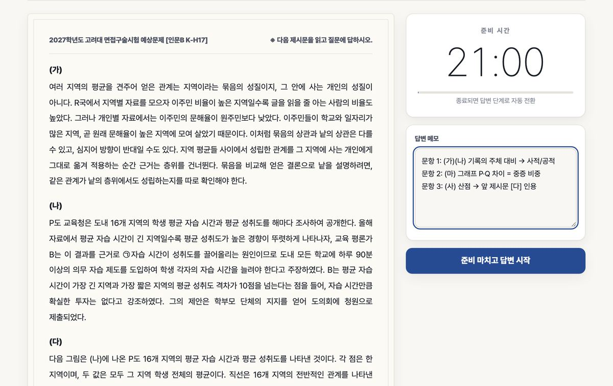
- 150세트기출 규격 그대로 저작한 제시문
- 5단위연세 3과 고려 2. 단위마다 30편
- 5회지문 한 편당 응시 횟수
- 3단전사와 진단과 구술체 재구성
- 8분 | 21분연세와 고려 준비 시간 규격
- 2종인강. 세트별 풀이법과 공통 풀이, 단위 전권에 포함
시작하기 전에
혼자 하는 제시문 면접 연습이 멈추는 자리
제시문 면접은 생활기록부를 보지 않습니다. 면접장에서 받은 글과 발문을 정해진 시간 안에 읽고 정해진 시간 안에 말하는 시험입니다. 혼자 연습하면 상담에서 반복해 듣는 네 문장에서 멈춥니다.
- 읽는 순서
“네 편 요약은 다 했는데, 뭘 물었는지는 답을 못 했어요.”
요약은 답이 아닙니다. 발문이 지목한 기준으로 판단해야 답이 됩니다.
- 쓰는 분량
“문장으로 쓰다가 준비 시간이 끝났어요.”
세 문항 발화 분량은 2,000자에 가깝습니다. 21분 안에 손으로 쓸 수 없는 분량.
- 시간 감각
“시간이 남아서 했던 말을 또 했어요.”
닫는 문장을 정해 두지 않으면 마지막 30초가 늘어집니다.
- 복기 부재
“열 세트를 풀었는데 뭐가 틀렸는지 모르겠어요.”
혼자 연습하면 채점이 없습니다. 같은 실수의 반복.
네 문장의 공통 원인은 독해력이 아닙니다. 시험장의 시간 규격 안에서 소리 내어 말해 볼 자리와 말한 것을 돌려받을 자리가 없었다는 것입니다.
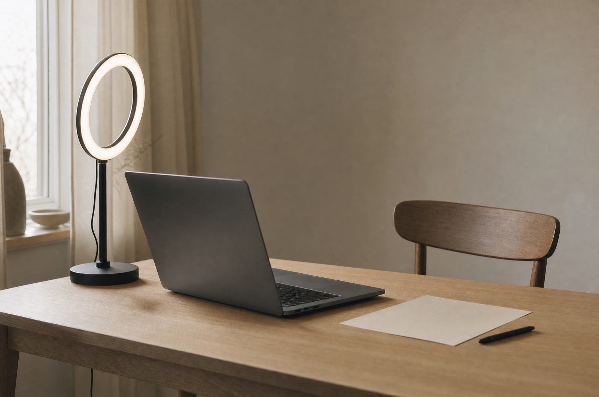
이 스튜디오가 맞는 사람
연세대와 고려대 제시문 면접을 앞둔 학생과 그 연습을 지켜보려는 사람
- 학생
연세대 활동우수형과 국제형, 고려대 계열적합전형 지원자
지원 단위의 기출 규격으로 응시 기록을 쌓는 학생. 실전형 한 번 뒤 연습형으로 막힌 문항만 다시 하고 실전형으로 확인.
- 학부모
준비 상태를 리포트로 확인하려는 학부모
응시마다 여섯 축 점수와 첨삭이 마이페이지에 남습니다. 어느 축이 낮은지와 다음 회차에 무엇이 올라갔는지가 숫자로 보입니다.
- 학원, 학교
여러 학생을 같은 기준으로 지도하는 곳
강사 화면에서 전 시도의 영상과 전사와 첨삭을 열람합니다. 좌석 단위 도입은 스쿨 플랜으로.
만든 사람과 기준
한 사람, 같은 기준, 150세트
13년차 입시 컨설턴트 한 사람이 150세트 제시문 해제와 가이드북 31권을 같은 기준으로 편집합니다. 고려대학교 영어교육과 졸업.
- 원칙 1
기출 규격 실측
연세대 2026학년도 문항카드와 고려대 3개년 문항카드 12장을 전수 실측했습니다. 제시문 편수와 문항 수와 배점과 시간을 그대로 옮겼습니다.
- 원칙 2
세트 전수 정합 판정
150세트 전부를 기출 유형 비율과 배점 구조에 대조해 판정합니다. 판정을 통과한 세트만 스튜디오에 올립니다.
- 원칙 3
루브릭 대조 채점
기준마다 모범 포인트를 대조하고 전사문을 인용한 뒤 다섯 밴드로 판정합니다. 경계선은 낮은 밴드로 둡니다.
- 원칙 4
판을 밝힘
세트마다 난이도와 네 축 점수를 공개합니다. 풀이법 인강 공개 편수는 열람 시점 기준으로 적습니다.
“수험생이 제시문들의 논리를 읽어내어 관점 간 관계를 정확히 구성하고, 자기 생각을 다른 사람이 이해할 수 있도록 효과적으로 설명할 수 있는지 평가하고자 하였습니다.”
연세대학교 2026학년도 선행학습영향평가 문항카드 08, 출제 의도이 스튜디오가 하는 일
응시 한 회, 다섯 단계 그대로 준비 순서
세트를 고르고 준비하고 답변을 촬영합니다. 리포트를 받고 다시 응시합니다. 앞의 세 단계는 시험장을 옮겨 놓은 것이고 4단계가 이 스튜디오의 본론, 5단계는 그 리포트로 다음 회차를 정하는 자리입니다.
- 1단계
세트 고르기
다섯 단위 150세트. 난이도와 네 축 점수를 보고 고릅니다.
기출 규격 제시문 은행 - 2단계
준비 시간
제시문과 발문을 읽고 메모. 연세 8분과 고려 21분이 그대로 흐릅니다.
실전 규격 타이머 - 3단계
답변 촬영
전면 카메라로 촬영하며 소리 내어 답변. 실전형은 시간 배분도 스스로.
녹화, 전사, 태도 신호 - 4단계, 본론
전사, 채점, 첨삭 세 단
말한 그대로 전사한 뒤 루브릭으로 채점하고 진단과 구술체 재구성을 붙입니다.
리포트가 응시 직후 열림 - 5단계
재응시와 순위
지문마다 5회. 막힌 문항만 연습형으로 다시 한 뒤 실전형으로 확인.
5회 사다리, 랭킹 3축
- 세트 고르기
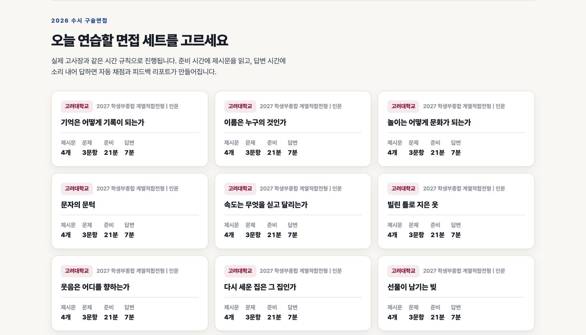
- 응시 전 점검
- 준비 시간
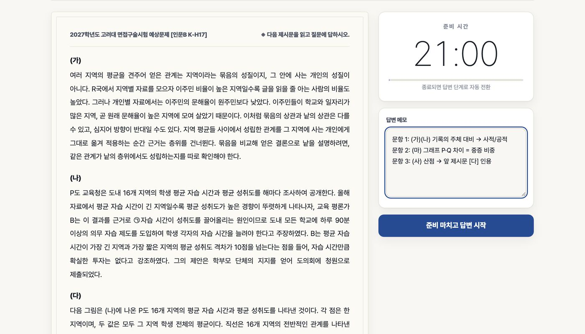
- 답변 촬영
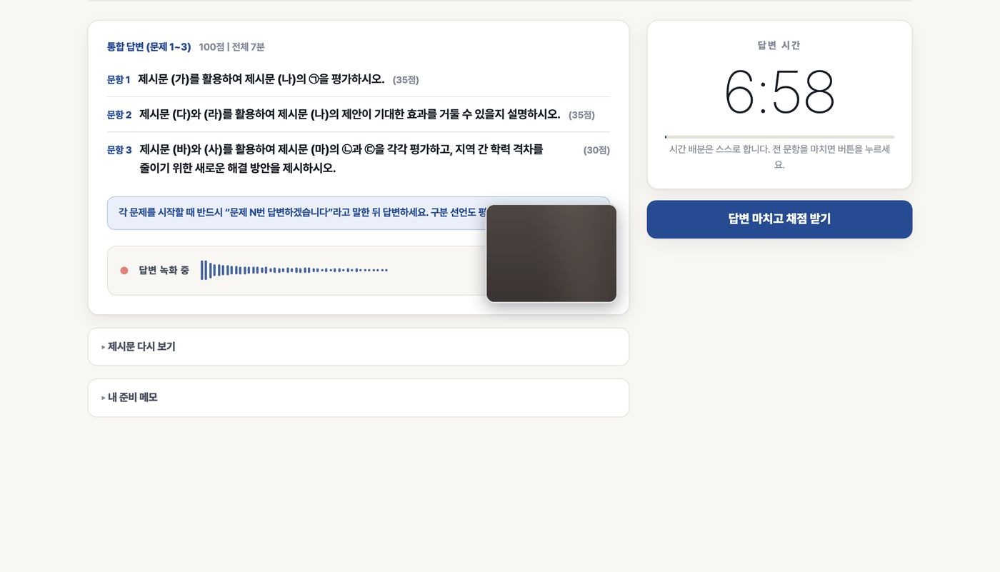
- 여섯 축 리포트
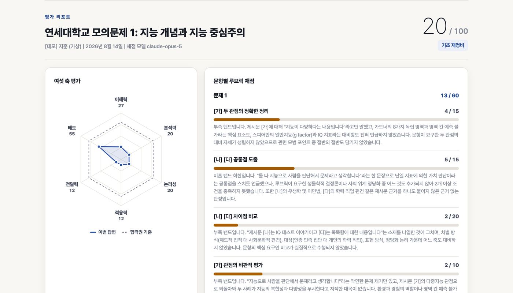
- 첨삭 세 단
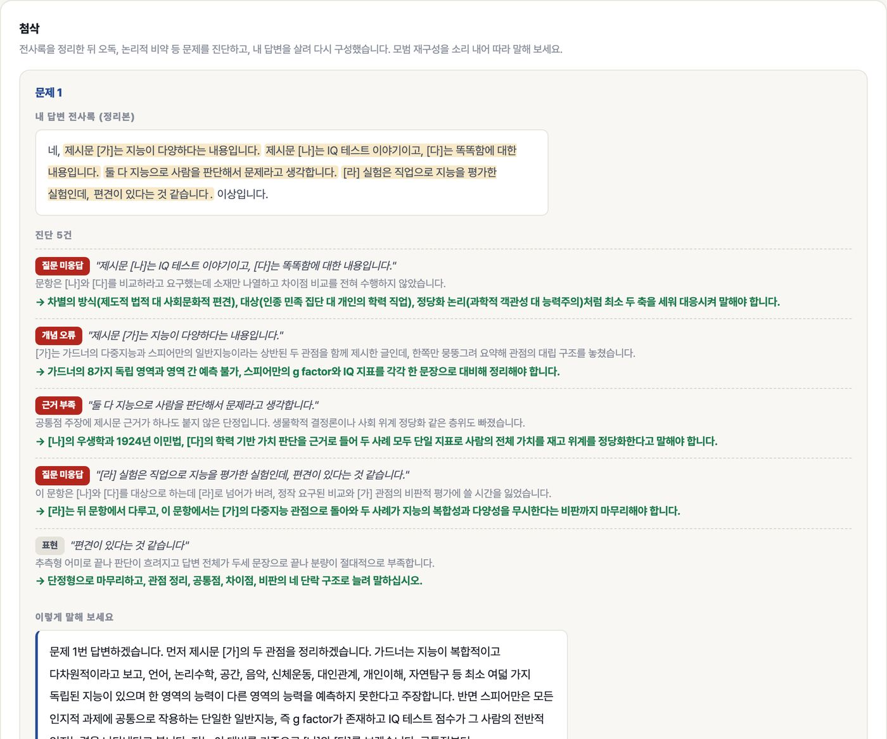
스튜디오 실제 화면. 고려대 계열적합 인문 K-H17 세트. 데모 응시 리포트는 가상 학생의 실채점 결과.
세트 고르기
다섯 단위 150세트 | 난이도 | 네 축 점수
이 단계에 들어 있는 것
- 연세대 활동우수형 인문통합과 자연과 국제형. 고려대 계열적합전형 인문과 자연. 단위마다 30편이고 모두 150세트
- 난이도 네 단. 하 30과 중 50과 상 50과 최상 20
- 세트마다 네 축 점수. 제시문 추상도나 자료 해석 부하처럼 단위마다 다른 어휘
- 고려대 인문의 표와 산점도 자료, 연세대 국제형의 영어 제시문까지 기출 구성 그대로
왜 첫 자리인가
제시문 면접의 문제는 지원 대학의 규격을 따릅니다. 연세대는 제시문 4편에 문제 2개, 고려대는 3문항이 앞 문항의 답을 이어 씁니다. 다른 대학 문제로 연습하면 준비 시간의 순서부터 어긋납니다.
150세트 전부가 기출의 편수와 배점과 시간 규격을 그대로 따릅니다. 유형 비율까지 대조해 판정을 통과한 세트만 올렸습니다.
| 단위 | 세트 제목 | 난이도 |
|---|---|---|
| 연세대 활동우수 인문통합 | 선택지의 양과 행복의 관계 | 하 |
| 잣대의 같음과 출발의 같음 | 중 | |
| 점수를 믿는 일과 사람을 믿는 일 | 중 | |
| 연세대 활동우수 자연 | 모여 있는 값과 놓여 있는 자리 | 중 |
| 다시 해 본 자리에서 남는 것 | 상 | |
| 손잡이가 늘어날 때 줄어드는 것 | 상 | |
| 연세대 국제형 | 언어는 생각을 빚는가 실어 나르는가 | 하 |
| 지역 문화를 지키는 관광, 소비하는 관광 | 하 | |
| 낯선 예절을 읽는 두 가지 방식 | 하 | |
| 고려대 계열적합 인문 | 기억은 어떻게 기록이 되는가 | 하 |
| 이름은 누구의 것인가 | 하 | |
| 놀이는 어떻게 문화가 되는가 | 하 | |
| 고려대 계열적합 자연 | 제자리로 돌아오는 길 | 하 |
| 차이가 사라질 때까지 | 하 | |
| 맞서는 두 힘이 만드는 멈춤 | 중 |
준비 시간
제시문, 발문, 답변 메모 | 연세 8분, 고려 21분
이 단계에 들어 있는 것
- 실제 문제지 형식의 제시문과 발문. 배점과 답변 시간이 문항 옆에 표기
- 준비 타이머. 끝나면 답변 단계로 자동 전환
- 답변 메모. 답변 화면에서도 펼쳐 볼 수 있음
- 실전형과 연습형. 실전형은 답변 시간이 문항별로 나뉘지 않고 연습형은 문항마다 따로
왜 필요한가
준비 시간의 순서가 답변을 정합니다. 발문을 먼저 읽고 제시문에 문항 번호를 적고 명사구로 골격을 채우는 연습은 타이머가 실제로 흐를 때만 몸에 붙습니다.
시험 당일에 처음 겪는 조건이 없도록 준비 시간과 답변 시간을 대학 규격 그대로 두었습니다.
| 연세대 활동우수형, 국제형 | |
|---|---|
| 준비 시간 | 480초, 8분 |
| 답변 시간 | 300초, 5분 |
| 구성 | 제시문 4편, 문제 2개 |
| 배점 | 문제 1과 문제 2, 60점과 40점 |
| 고려대 계열적합전형 | |
|---|---|
| 준비 시간 | 1,260초, 21분 |
| 발화 시간 | 420초, 7분 통합 |
| 구성 | 제시문 여러 편, 3문항. 자연은 뒤 문항이 앞 문항의 개념을 참조 |
| 배분 | 문항당 140초 기준, 실전형은 스스로 배분 |
답변 촬영
전면 카메라 녹화 | 말한 그대로 전사 | 전달과 태도 신호
이 단계에 들어 있는 것
- 답변 타이머와 녹화. 전면 카메라를 켜면 영상으로, 끄면 음성으로 기록
- 실전형은 “문제 N번 답변하겠습니다” 선언으로 문항을 가릅니다. 선언이 없으면 자르지 않고 전체를 채점
- 말한 그대로 받아 적는 전사. 제시문 어휘를 기준으로 오인식을 보정
- 어절 수와 발화 시간과 분당 어절, 간투사 횟수와 침묵 비율과 사용 시간을 측정
- 응시 영상은 마이페이지에서 다시 보기
- 응시 영상과 목소리는 첨삭과 계정 확인에만 씁니다. 목소리 대조는 첫 응시 전 고지에 동의한 뒤에만 합니다
어떻게 쓰나
내용은 전사문에서 채점하고 전달과 태도는 음성과 영상 신호에서 잽니다. 태도 축은 침묵과 완주와 개시 선언과 카메라 네 성분으로 계산합니다.
자기 답변을 글로 읽는 첫 경험이 여기서 생깁니다. 무엇을 말했다고 생각했는지와 실제로 말한 것의 차이가 전사문에 그대로 남습니다.
- 어절 수40어절
- 발화 시간35.7초
- 분당 어절67.3
- 간투사5회어 3, 음 2
- 침묵 비율8.9%
- 사용 시간39.2/ 300초
이 스튜디오의 본론
전사, 채점, 첨삭 세 단
문항별 루브릭 채점 | 여섯 축 | 진단과 구술체 재구성
이 단계에 들어 있는 것
- 문항별 루브릭 채점. 기준마다 점수와 밴드와 전사문을 인용한 근거
- 여섯 축. 이해력과 분석력과 논리성과 적용력은 루브릭에서 나오고 전달력과 태도는 음성과 영상 신호에서 나옴
- 첨삭 1단은 전사록 정리. 간투사를 걷고 오인식을 보정. 내용은 더하지 않음
- 첨삭 2단은 진단. 여섯 유형(오독 / 논리적 비약 / 근거 부족 / 개념 오류 / 질문 미응답 / 표현)을 인용과 문제와 고칠 방향으로 적음
- 첨삭 3단은 구술체 재구성. 내 답변을 살려 “문제 1번 답변하겠습니다”부터 끝까지 다시 세운 모범 답변
- 강점과 개선 포인트와 총평
왜 본론인가
혼자 연습의 공백은 채점과 복기입니다. 리포트는 응시 직후 자동으로 열리고 진단은 내가 실제로 말한 문장을 인용해 무엇이 왜 부족한지 적습니다.
3단의 모범 재구성은 내 답변의 뼈대 위에 세운 것이라, 소리 내어 따라 말하면 다음 회차의 답변이 됩니다.
“네, 제시문 [가]는 지능이 다양하다는 내용입니다. 제시문 [나]는 IQ 테스트 이야기이고, [다]는 똑똑함에 대한 내용입니다. 둘 다 지능으로 사람을 판단해서 문제라고 생각합니다. [라] 실험은 직업으로 지능을 평가한 실험인데, 편견이 있다는 것 같습니다. 이상입니다.”
- 질문 미응답
“제시문 [나]는 IQ 테스트 이야기이고, [다]는 똑똑함에 대한 내용입니다.”
문항은 [나]와 [다]를 비교하라고 요구했는데 소재만 나열하고 차이점 비교를 전혀 수행하지 않았습니다.
차별의 방식(제도적 법적 대 사회문화적 편견), 대상(인종 민족 집단 대 개인의 학력 직업), 정당화 논리(과학적 객관성 대 능력주의)처럼 최소 두 축을 세워 대응시켜 말해야 합니다.
- 근거 부족
“둘 다 지능으로 사람을 판단해서 문제라고 생각합니다.”
공통점 주장에 제시문 근거가 하나도 붙지 않은 단정입니다. 생물학적 결정론이나 사회 위계 정당화 같은 층위도 빠졌습니다.
[나]의 우생학과 1924년 이민법, [다]의 학력 기반 가치 판단을 근거로 들어 두 사례 모두 단일 지표로 사람의 전체 가치를 재고 위계를 정당화한다고 말해야 합니다.
“문제 1번 답변하겠습니다. 먼저 제시문 [가]의 두 관점을 정리하겠습니다. 가드너는 지능이 복합적이고 다차원적이라고 보고, 언어, 논리수학, 공간, 음악, 신체운동, 대인관계, 개인이해, 자연탐구 등 최소 여덟 가지 독립된 지능이 있으며 한 영역의 능력이 다른 영역의 능력을 예측하지 못한다고 주장합니다. 반면 스피어만은 모든 인지적 과제에 공통으로 작용하는 단일한 일반지능, 즉 g factor가 존재하고 IQ 테스트 점수가 그 사람의 전반적 인지능력을 나타낸다고 봅니다. 저는 이 대비를 기준으로 [나]와 [다]를 보겠습니다.”
- 01
응시를 마치면 리포트가 열립니다.
- 02
여섯 축에서 낮은 축과 문항별 밴드를 봅니다.
- 03
진단의 인용 문장을 내 답변에서 찾아 고칠 방향을 적습니다.
- 04
구술체 재구성을 소리 내어 따라 말한 뒤 연습형으로 그 문항만 다시 응시합니다.
재응시와 순위
지문당 5회 | 랭킹 3축 | 인강 두 종류
이 단계에 들어 있는 것
- 지문 한 편에 5회. 실전형 한 번 뒤 연습형으로 막힌 문항만 다시 하고 실전형으로 확인
- 랭킹 3축은 지망 대학별과 세트별과 연습량. 닉네임으로 공개하고 학생마다 최고 기록 한 건만 셈
- 참가 3명 미만인 보드는 비공개. 다른 학생의 답변과 전사와 첨삭은 어디서도 열리지 않음
- 세트마다 풀이법 인강 한 편. 낱권에는 그 세트 1편이, 단위 전권에는 30편이 딸려 있어 추가 비용 없음
- 공통 풀이 인강도 단위 전권에 포함. 인강만 들으려면 따로 살 수 있음
- 응시 이용 기간 12개월, 인강 시청 기간 3개월. 단위 전권은 기간 안의 추가 지문도 포함
왜 마지막인가
리포트가 다음 회차를 정합니다. 낮은 축과 진단이 가리킨 문항을 연습형으로 끊어 다시 한 뒤 실전형으로 돌아가 같은 자리가 올라갔는지 확인합니다.
순위는 점수와 연습량만 보여 줍니다. 같은 대학을 지망하는 학생들 사이에서 내 위치를 알 수 있고, 남의 답을 볼 길은 없습니다.
인강, 두 종류
- 공통 풀이 인강. 제시문 면접을 어떻게 읽고 어떻게 말하는지, 다섯 단위에 공통인 풀이법. 단위 전권에 포함되고 인강만 따로는 220,000원
- 세트별 풀이법 인강. 세트마다 한 편, 그 세트의 제시문과 문항으로 풀이 순서를 보임. 낱권을 사면 그 세트 1편이, 단위 전권을 사면 그 단위 30편이 딸려 옴
- 시청은 마이페이지의 내 강의, 시청 기간은 지급일부터 3개월. 공개 편수는 열람 시점 기준으로 지문 목록과 내 강의에 표시
| 1회 | 실전형 | 통합 답변으로 시작 상태를 잽니다. 리포트의 낮은 축이 기준선. |
|---|---|---|
| 2회 | 연습형 | 진단이 인용한 문항만 따로. 구술체 재구성을 따라 말한 뒤 응시. |
| 3회 | 연습형 | 다른 문항. 같은 유형의 진단이 다시 뜨는지 봅니다. |
| 4회 | 연습형 | 시간 배분. 문항별 답변 시간을 실전 배분에 맞춰 닫는 문장까지. |
| 5회 | 실전형 | 통합 답변으로 확인. 1회와 같은 축이 올라갔으면 다음 세트로. |
준비 순서의 차이
기출을 눈으로 푸는 준비와 시간 안에 말하고 돌려받는 준비
흔한 준비는 기출 제시문을 읽고 답안을 써 봅니다. 이 스튜디오의 순서는 지원 대학 규격의 타이머 안에서 말하는 데서 시작하고, 말한 것을 전사와 첨삭으로 돌려받는 데서 끝납니다.
| 단계 | 흔한 준비 | 이 스튜디오의 순서 |
|---|---|---|
| 문제 | 여러 대학 기출을 섞어 읽기 | 지원 단위의 규격 그대로 저작한 150세트 (1단계) |
| 시간 | 시간 제한 없이 답안 쓰기 | 준비 8분 또는 21분, 답변 5분 또는 7분 타이머 (2단계) |
| 답변 | 글로 쓰거나 머릿속으로 | 전면 카메라 앞에서 소리 내어 답하고 전사와 태도 신호를 기록 (3단계) |
| 채점 | 없음, 또는 해설과 눈으로 대조 | 루브릭 대조와 밴드와 인용 근거와 여섯 축 (4단계) |
| 복기 | 같은 실수의 반복 | 진단 여섯 유형과 내 답변 위에 세운 구술체 재구성 (4단계) |
| 재응시 | 새 문제로 넘어감 | 같은 지문 5회 사다리, 순위로 위치 확인 (5단계) |
받는 방법과 가격
회원 체험 응시 1회, 그다음은 지문 하나로
카메라와 마이크가 있는 브라우저면 됩니다. 응시 시간은 대학 규격과 같고 회차마다 세 단 첨삭이 마이페이지에 붙습니다. 응시 시작 전에는 전액 취소할 수 있습니다.
- 01
회원 가입과 체험 응시
회원은 무료 응시 1회. 실제 세트로 리포트까지 받습니다.
- 02
지문 또는 단위 고르기
지문 낱권 한 편, 지원 단위 전권 30편, 또는 공통 풀이 인강만.
- 03
마이페이지에서 응시
스튜디오로 바로 열립니다. 리포트와 영상은 마이페이지에 보관.
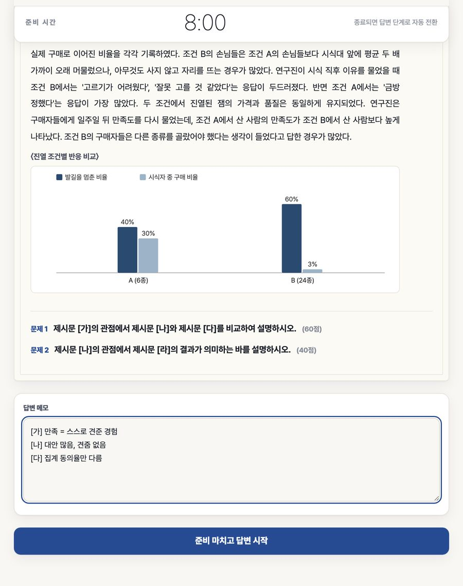
지문 낱권
33,000원, 지문 1편- 응시 5회에 회차마다 세 단 첨삭
- 그 세트 풀이법 인강 1편 포함
- 응시 영상 보관과 다시 보기
- 응시 12개월, 인강 3개월
응시 단위 전권
495,000원, 단위 1곳, 인강 포함- 그 단위 지문 30편에 지문마다 5회
- 세트별 풀이법 인강 30편과 공통 풀이 인강 포함
- 기간 안의 추가 지문 포함
- 응시 12개월, 인강 3개월
- 낱권 33,000원 × 30편 = 990,000원. 전권 495,000원이면 한 편에 16,500원, 인강까지
공통 풀이 인강
220,000원, 인강만- 응시 없이 공통 풀이 인강만 듣는 학생
- 단위 전권을 사면 이미 포함되어 따로 살 필요 없음
- 마이페이지의 내 강의에서 시청, 구매일부터 3개월
스쿨 플랜
좌석 5개부터, 문의- 학원과 단체는 좌석 수에 따라 할인
- 강사 계정과 학생 리포트 열람
- 문의 이메일로 안내
990,000원은 낱권 30편의 합산 금액이며 따로 파는 상품이 아닙니다. 가격은 전부 부가세 포함입니다.
응시 단위 다섯, 지문 150편
지원 단위부터 고르기
단위마다 지문 30편. 단위를 누르면 그 단위의 지문 목록과 담기가 있는 스튜디오 면으로 갑니다.
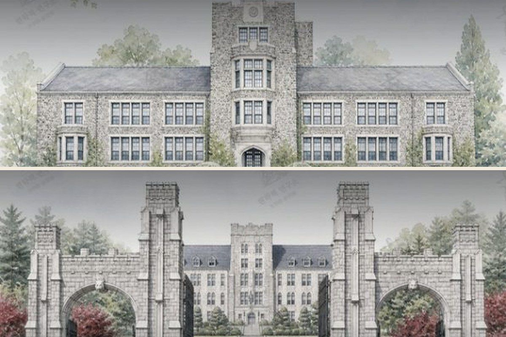
- 연세대
연세대 활동우수 인문통합
준비 8분, 답변 5분. 관점 사이 관계 구성
- 지문
- 30편
- 난이도
- 하 5, 중 10, 상 10, 최상 5
- 축
- 제시문 추상도, 관계 구성 단계수, 자료 해석 부하, 관점 간 긴장도
- 하선택지의 양과 행복의 관계
- 중잣대의 같음과 출발의 같음
- 중점수를 믿는 일과 사람을 믿는 일
- 연세대
연세대 활동우수 자연
준비 8분, 답변 5분. 자연 계열 30세트
- 지문
- 30편
- 난이도
- 하 5, 중 10, 상 10, 최상 5
- 축
- 제시문 추상도, 관계 구성 단계수, 자료 해석 부하, 관점 간 긴장도
- 중모여 있는 값과 놓여 있는 자리
- 상다시 해 본 자리에서 남는 것
- 상손잡이가 늘어날 때 줄어드는 것
- 연세대
연세대 국제형
준비 8분, 답변 5분. 영어 제시문 포함
- 지문
- 30편
- 난이도
- 하 10, 중 10, 상 10
- 축
- 제시문 추상도, 다층, 영어 지문 부하, 관점 간 긴장도
- 하언어는 생각을 빚는가 실어 나르는가
- 하지역 문화를 지키는 관광, 소비하는 관광
- 하낯선 예절을 읽는 두 가지 방식
- 고려대
고려대 계열적합 인문
준비 21분, 발화 7분. 3문항 한 번에
- 지문
- 30편
- 난이도
- 하 5, 중 10, 상 10, 최상 5
- 축
- 제시문 추상도, 연쇄 통합 폭, 자료 수리 부하, 개념 전이 거리
- 하기억은 어떻게 기록이 되는가
- 하이름은 누구의 것인가
- 하놀이는 어떻게 문화가 되는가
- 고려대
고려대 계열적합 자연
준비 21분, 발화 7분. 자연 계열 30세트
- 지문
- 30편
- 난이도
- 하 5, 중 10, 상 10, 최상 5
- 축
- 제시문 추상도, 연쇄 통합 폭, 자료 수리 부하, 개념 전이 거리
- 하제자리로 돌아오는 길
- 하차이가 사라질 때까지
- 중맞서는 두 힘이 만드는 멈춤
자주 묻는 질문
스튜디오에 대해
응시에 무엇이 필요한가
첨삭은 언제 받나
채점은 누가 하나
인강은 무엇이 포함되나
한 계정을 여럿이 써도 되나
환불은
서류기반 면접 준비에도 쓸 수 있나
2027 대비
면접장의 시간표로, 오늘 첫 응시
응시 단위를 고르면 그 단위의 지문 30편이 열립니다. 준비 타이머에서 시작해 내 답변 위에 세운 구술체 재구성으로 끝나는 순서 그대로.
지문 1편 33,000원, 단위 전권 495,000원 인강 포함, 공통 풀이 인강 220,000원. 응시 12개월, 인강 3개월
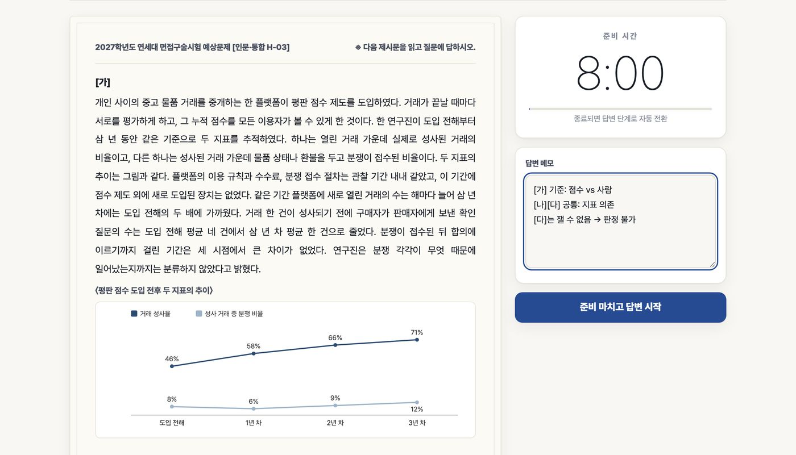